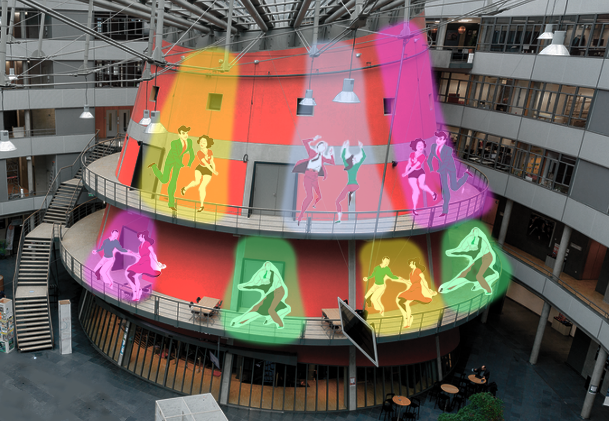
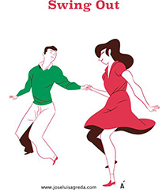
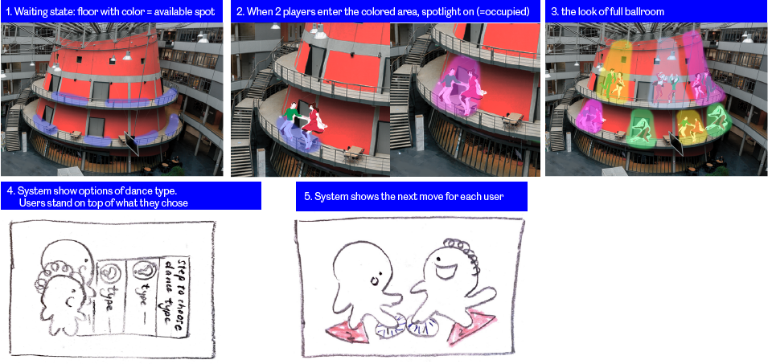

Concept: What if the lighthouse becomes a light-ballroom-house?
When I went to France, there was one night I saw a lot of people dancing in a public space at night time and the atmosphere was very lovely. I also think people nowadays, especially younger generation, they know less about social dance. Therefore, I came up with this idea of having a "ballroom" like area in lighthouse and people in the main area can also stand there as audience or wait for the next turn to be there as well. The floor will project the step for each player so that they can follow.
Interaction between players
The interaction between players is very straight forward - dancing. But before it starts, they also need to choose the type of dance that they want to try out.
Interaction between players and the system
How the concept will work technically
Description
For this topic, I found a playful interactive installation from Nike in Japan. Nike has multiple streams of products, e.g. Nike + Basketball, Nike + Training, and Nike + FUEL BAND. The launch day of a certain stream of products is normally varied based on the country. In this case, Japan was a few years later than the West to launch the mentioned streams. In order to let the public get to know and even experience how the products are, Nike Japan set up a pop up "aracade" where the users could wear the upcoming new shoes from Nike and test them by playing different games. Among all the games, I found “digital air hockey game” the most interesting one.
Purpose of interface
Two players collaborate on the LED court to compete for how long the virtually displayed ball on the court can be rallied. Players wearing NIKE + FUEL BAND will earn NIKE FUEL as much as they move during the mission, and the NIKE FUEL earned by the two will be added up to score points.
How the installation works technically
to be filled.....
Type of play
2-multiplayers competitive play x structured x interdependent actions x shared space
In this installation, only 2 players are allowed within the LED court for each turn and the game will stop when there is a player scored. The reason that it is stuctured is because there are rules, just like how we play air hockey. But the action of players are independent.
What did you think of this topic?
I found this topic is interesting because of its possibilties and also how much it can get people (even strangers) engage together. I think it also triggers (but in a good way) people to interact with the installation or touchpoint with their own sensation. It might be related to my own background, but for example, people from Hong Kong in generally are more preserved than western people. We are being raised with the idea of following rules and such. That's why I think a lot of people are less "tempted" or experimentative to try something that looks less usual. However, with such technology, it can raise the curiosity of people to trigger to take action and interact if it is designed in a welcoming way.
How do you see applications and the future of this?
I think playful interactions are getting more popular nowadays. We often see it being used in commerical, education and leisure, which pretty much most aspects of human lifes. Therefore, I do wonder if it would be used for animals in the future. But for any cruial purpose for sure, need to stress this strong here, but more as in if we need to help animals to adapt in a new environment or so.
Did the subject meet your expectations?
It certainly did! It has given me more insights in term of how to welcome people to come together and interact with a certain space or installation. I think the word "interact" in this situation is actually deeper than we thought. It is not just about the action itself, but also the outcome that can help, encourage, teach or ease the users' needs.